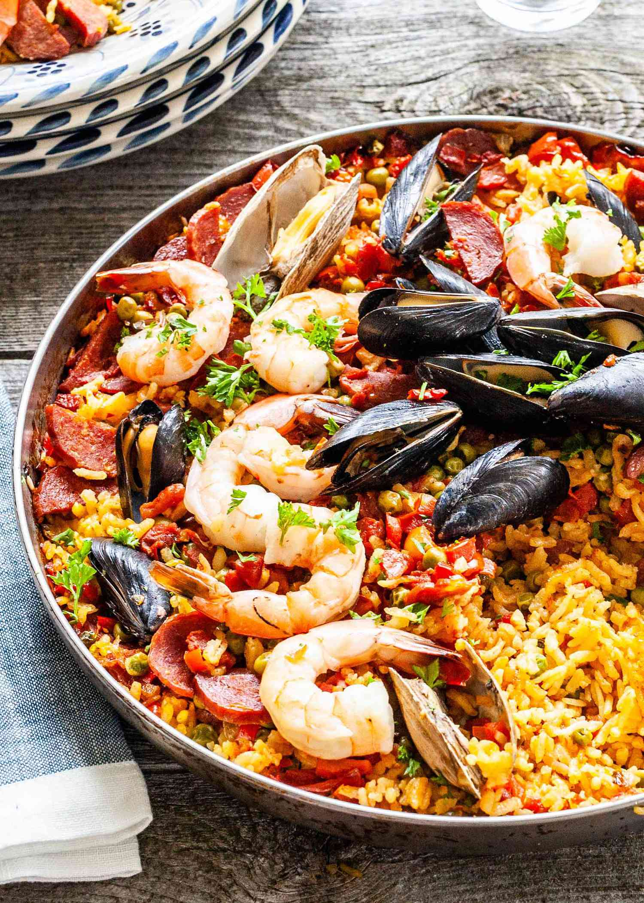

Paella Recipe

Paella is the Spanish word for the pan in which this
dish is cooked. Spaniards will argue about the true
origins and authenticity of paella, but at its core paella
is rice dish with some assortment of meats and veggies added.
Ingredients
- arborio rice
- chicken broth
- red bell pepper
- yellow onion
- shrimp
Steps
- Finely dice the red bell pepper and onion.
- Sautee until aromatic and translucent.
- Add uncooked rice to pan and briefly toast while
mixing contents.
- Add chicken broth and bring to a boil. Do not move
rice at this stage. Boil for 20 mins.
- Add shrimp to the boiling broth. Cook for
additional 5 minutes.